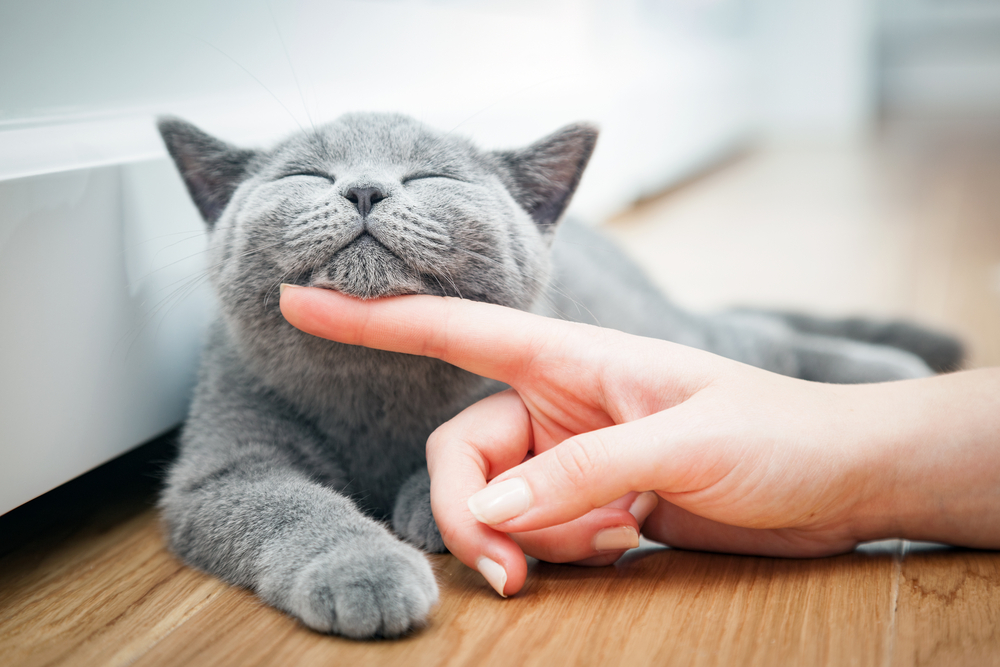
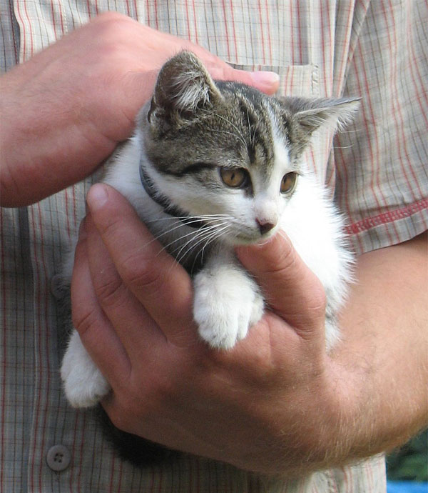
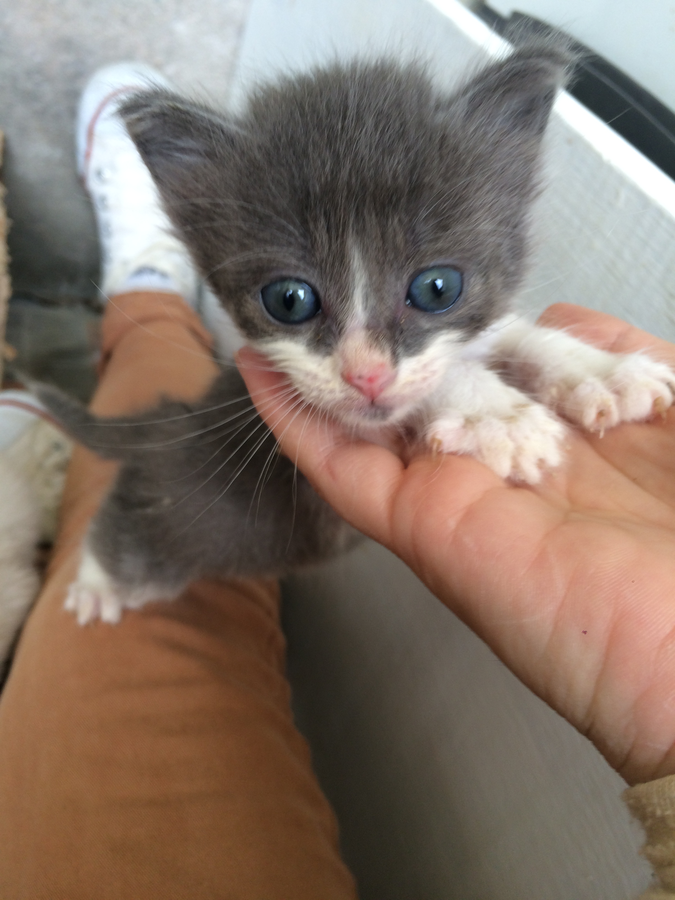
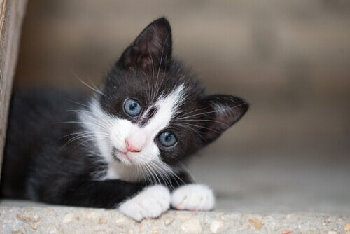

ADOTE
Existem cerca de 250 gatos abandonados, vivendo na Universidade Federal de Sergipe.
DOE
A alimentação dos animais é feita somente com doações.
NÃO ABANDONE
O número de animais abandonados cresce diariamente.
CUIDE
Ter um animal de estimação é bom pra você e pra ele támbem.
O QUE EU PRECISO PARA ADOTAR?
A Bichos do Campus tem um processo de adoção seguindo alguns critérios.
Este processo é feito para garantir o conforto do animal e evitar possíveis problemas.
- É preciso não ter histórico de abandono.
- Caso você more em apartamento, é necessário ter as janelas teladas.
- Outros.

Me adote!

Jon Snow
Macho, 4 meses e precisa de um lar.

Arya
Fêmea, 1 ano e precisa de um lar.

Frajola 1
Macho, 8 meses e precisa de um lar.

Frajola 2
Macho, 8 meses e precisa de um lar
Histórias felizes

Katie Johnson, CEO
“Eu adotei uma gatinha e isso mudou a minha vida, sou uma nova pessoa.”

Jane Mars, Designer
“Gatos são demais, já adotei três e estou de olho no quarto!”

Shane Holmes, CEO
“Serei uma velha com ciquenta tons de gato em casa!”

Mark Johnson, CEO
“Meus filhos adoraram adotar dois gatinhos da UFS!”